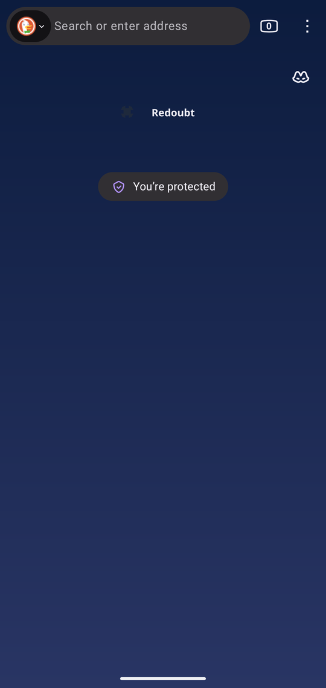
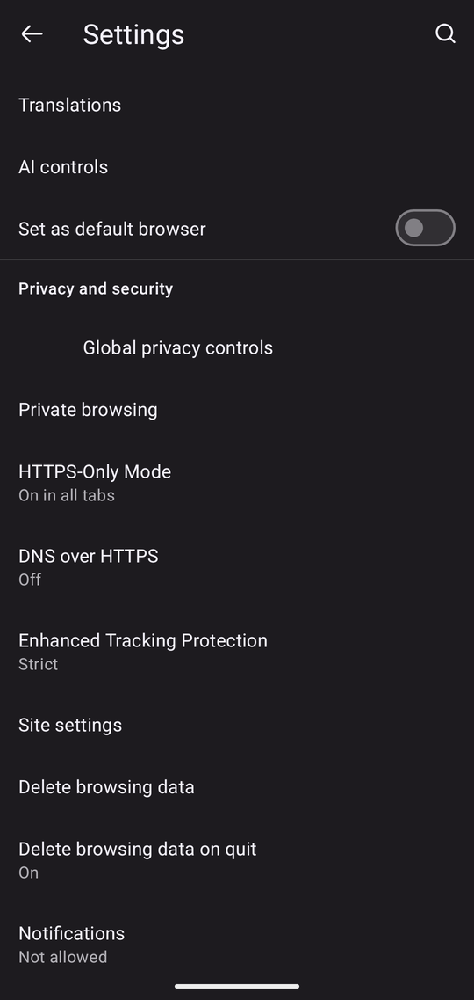
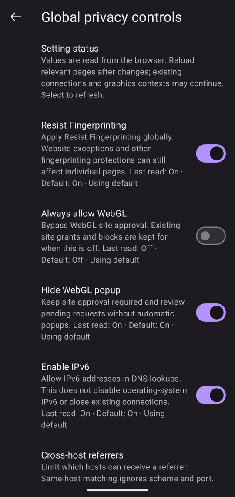

Redoubt
A privacy-hardened Android browser, built from Firefox’s source with LibreWolf’s privacy configuration and uBlock Origin.
Independent project: not LibreWolf, not Firefox, and endorsed by neither. What that means
Redoubt ships the same privacy configuration and the same Gecko-level security patches as LibreWolf desktop, on a platform whose process containment is weaker — and we publish exactly where.
That “where” is the measured, dated parity table in PARITY.md, summarised on Privacy & limits. The largest gap first: Android has no Gecko content-process sandbox, so Redoubt’s process containment is weaker than LibreWolf on the desktop.
Redoubt is not LibreWolf, and not Firefox. It is an independent fork of LibreWolf’s source, maintained by one person who is not a LibreWolf developer. Neither the LibreWolf project nor Mozilla has built, reviewed, endorsed or supported it. Please do not report Redoubt problems to LibreWolf or Mozilla.



Status: stable
The current release is Redoubt 158.0-2, based on Firefox 158 (Firefox’s regular release track). It turns content-process isolation back on for Android 12 and newer, needs Android 8.0 or later, and installs over any earlier Redoubt release as an update.
How it is tested. Every release passes automated acceptance on Android 11, 12 and 14 emulators. On 2026-10-14 the signed 158.0-2 release (arm64) also ran on a Pixel 9a (Android 17) and a Xiaomi Mi 8 (LineageOS, Android 15): web pages ran in isolated processes, 1080p H.264, VP9 and AV1 test videos played without dropped frames, common sites loaded, and nothing crashed. The maintainer also tested an arm64 development build on a Pixel 10 Pro (Android 17). Not tested yet: phones with 4 GB of RAM or less, Android 8–11 on real hardware, and real password managers. Reports from real devices are welcome.
Redoubt is distributed through its own F-Droid repository and on GitHub Releases. It is not on Google Play, Accrescent or f-droid.org’s main repository.
Known issues
- Reddit’s login page stays blank.
reddit.com/loginshows a white page in Redoubt, on a fresh profile and after visiting reddit.com; reading Reddit works. Turning off tracking protection for the site, allowing WebGL, turning off resist-fingerprinting or uBlock Origin, or requesting the desktop site did not fix it in our tests. Under investigation. - WebGL is blocked until you allow it for a site, without a pop-up. If a page with maps, 3D or games stays empty, open the site information panel (the shield next to the address) → Canvas and WebGL permissions.
- No push notifications from websites. Firebase Cloud Messaging is removed with Google Play services.
- Passkeys depend on your password manager trusting Redoubt as a browser: which ones do.
More answers in the FAQ; the security limits are on Privacy & limits.
Download
The easiest way is the F-Droid repository: F-Droid installs Redoubt and tells you about updates. Or download an APK from the latest release:
| file | for |
|---|---|
fenix-arm64-v8a-release.apk | almost any phone from the last several years |
fenix-armeabi-v7a-release.apk | older 32-bit devices |
fenix-x86_64-release.apk | emulators |
fenix-universal-release.apk | all three ABIs; much larger, prefer a per-ABI APK |
The fenix- prefix is the file name of the Android app build Redoubt is made from; the installed app is Redoubt, org.redoubtbrowser. Installing, and staying up to date (with F-Droid or Obtainium), is on Install & updates.
Verify before installing
From the folder you downloaded the APK and SHA256SUMS.signed into:
sha256sum -c --ignore-missing SHA256SUMS.signed
apksigner verify --print-certs fenix-<abi>-release.apk | grep -i SHA-256SHA256SUMS.signed lists the hashes of the signed APKs; the file itself is not signed. It catches a corrupted download. The certificate check is what proves the APK is Redoubt’s: the signing certificate’s SHA-256 digest must be
64:14:EB:33:46:81:CF:6E:92:90:34:B5:6A:06:2D:2B:8D:A0:90:82:21:72:F7:A3:95:2C:85:FD:D1:28:3B:D0which apksigner prints without colons, in lower case:
6414eb334681cf6e929034b56a062d2b8da090822172f7a3952c85fdd1283bd0On the phone, an app that checks installed apps against published certificates (for example AppVerifier) can use this:
org.redoubtbrowser
64:14:EB:33:46:81:CF:6E:92:90:34:B5:6A:06:2D:2B:8D:A0:90:82:21:72:F7:A3:95:2C:85:FD:D1:28:3B:D0Every Redoubt APK is signed with this one key (APK signature schemes v2 and v3). If the digest differs, do not install it, and report it privately. The key and its custody are documented in SIGNING.md.
What it is
- Built from source. Gecko and the Android app are compiled from Firefox’s source with LibreWolf’s shared patch set and preference configuration applied.
- Telemetry and experiments removed, plus Google Play Services; sponsored shortcuts removed, search suggestions off by default.
- LibreWolf’s privacy defaults, uBlock Origin preinstalled, and stronger site isolation than stock Firefox for Android.
The details, and what is not yet proven, are on Privacy & limits. If you want a mature, widely used hardened Firefox for Android today, IronFox is that, and it is the browser LibreWolf itself recommends to Android users. How Redoubt differs is in POSITIONING.md.
How Redoubt is made
Redoubt has one maintainer. AI coding agents (Claude Code, Codex and local models) write and check most of the code, patches, tests and documentation, run the gates (the build, the Fenix unit-test suite and emulator acceptance) and record the evidence. The maintainer sets direction, decides the trade-offs, tests on devices and signs releases.
What you can check yourself: the preference configuration and the shared patch set are LibreWolf’s, and Gecko and Firefox for Android are Mozilla’s. Redoubt’s own changes are the 48 Android patches in patches/android, listed in assets/patches/android.txt. Every release names its source commit and the SHA-256 of Mozilla’s source tarball, and the test evidence for each release is in docs/android/evidence.
Attribution
Redoubt is built on LibreWolf’s work. The privacy configuration that is the point of this browser, and the patch set that enforces it, were written by the LibreWolf project. Redoubt is a fork of LibreWolf’s source under MPL-2.0 and ports that work to Android, a platform LibreWolf does not ship. Redoubt does not publish desktop builds: for LibreWolf on the desktop, use librewolf.net.